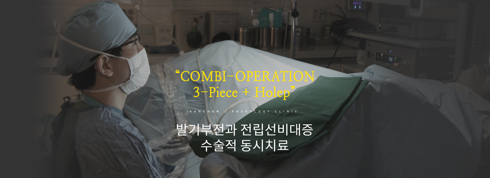

SGA
SGA (Sub Glans Augmentation)
기존 귀두테두리만 확대되어 부자연스러운 확대가 아닌, 환자 개개인에 맞추어 확대의 표현이 자연스럽게 반영되는 귀두확대수술입니다.

자연스러운 귀두·음경확대(SGA·NPA)부터 길이 손실 없는 기하학적 음경만곡증 교정, 바세린·파라핀 이물질 완전 제거까지 정밀하게 집도합니다.
기존 자가지방, 대체진피, 필러 등의 수술 경력이 없다면 예약 내원으로 당일 수술이 가능하며, 티 나지 않는 자연스러운 확대 결과를 추구합니다.
기존 귀두테두리만 확대되어 부자연스러운 확대가 아닌, 환자 개개인에 맞추어 확대의 표현이 자연스럽게 반영되는 귀두확대수술입니다.
포경수술 절개법으로 수술 부위가 티나지 않고, 수술 시 사용되는 진피는 동종제품의 수화제품이기에 보다 더 자연스럽습니다.
발기 시 음경이 상하좌우로 휘거나 심한 경우 꽈배기·경첩·모래시계 형태처럼 휘는 질환입니다. 선천적인 경우는 음경해면체의 구조적 문제이므로 음경해면체 성형수술을 시행하며, 후천적인 경우는 결절(Plaque) 유무 및 급성기 여부에 따라 약물·주사요법 또는 음경백막성형수술을 시행합니다.
반대면 백막을 똑같이 주름잡는 '주름잡기(plication)' 수술은 음경 길이가 짧아지는 단점이 있지만, 기하학적 음경백막성형수술은 모자라는 백막을 대체조직으로 기하학적으로 계산해 이식·복원하므로 길이 손실 없이 발기 시 모양이 자연스럽습니다.
• 혈액검사 (CBC)
• 강직도검사 (RigiScan)
• 초음파검사 (Ultrasound)
• 발기유발검사 (Artificial erection test)
음경확대 목적으로 비의료인에 의해 음성적으로 시술되는 바세린, 파라핀, 액상실리콘 등은 심각한 부작용을 초래합니다. 초기 염증에서 시간이 지날수록 피부괴사, 패혈증, 폐전색증 등이 일어날 수 있으며 음경해면체에 침범해 발기장애를 유발할 수 있으므로 염증조직의 완전제거가 최선입니다.
치골 부위 인대 및 피부 장력에 의해 몸 안으로 당겨 들어간 음경 길이를 해부학적 구조에 맞게 자연스럽게 인출하여 평상시 길이를 개선합니다.
치골부 지방층이나 근막 유착으로 음경이 파묻혀 보이는 경우 원인 구조를 교정하여 위생 및 외관상 불편함을 해소합니다.
3S·No3 원칙과 남자 간호사 전담 시스템으로 안전하게 진행합니다.